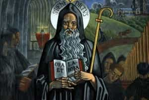
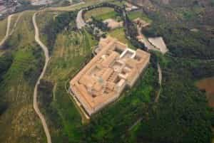

< < < Back
How To Restore Civilization By Following St. Benedict’s Example – Return Of Kings
Civilization is dying. Denizens of the manosphere attribute society’s terminal illness to numerous causes, and there are as many prescriptions as there are men, but the fact of Western cvilization’s rapidly approaching demise is acknowledged by all.
Progressive propaganda to the contrary, history is not a straight line culminating in the glorious present, but rather a cycle of various cultures rising and declining. If complete systemic collapse is inevitable, we can take lessons from another time when men saw their world crashing down around them.
The Western Roman Empire

The fall of the Western Roman Empire was the end of the world as our ancestors knew it. One man isolated himself from the corruption and decadence of Western Europe to pursue his goals above all else. Benedict of Nursia’s name is now circulating among the Christian blogosphere as they discuss the so-called “Benedict Option.”
Who was Saint Benedict? And what lessons can we take from his life and work?
The Man
The earliest record of St. Benedict’s life (480 AD-547) comes from the pen of Pope St. Gregory the Great (540-604). Tradition holds that he was born into a noble Roman family at a time when all bonds of laws, customs, and civil order were dissolving. Christianity, the official religion of the empire, was rife with heresy and schism. Benedict’s parents hoped their son would study the fine arts and live the comfortable life of a Roman noble.
Benedict, however, was disgusted by the hedonistic excess he saw in his contemporaries. At the age of 14, he fled to Subiaco, about 40 miles distant from Rome. For the sake of God, Benedict vowed to live by the work of his hands.
Most of us are not going to live in a cave and practice subsistence farming like Benedict, but there are still lessons to be learnt from his early life. The first step is to wean ourselves from the influence of pop culture as much as practicable. Turn off the TV and pick up the books that have withstood the test of time. For Benedict, his one book was the Bible, as we will see later in his life.
The Mentor
Neither earthquakes nor World Wars can keep Monte Cassino down
Benedict lived in the wilderness for three years and, Pope Gregory tells us, he grew to know himself and the ways of his fellow man. During that time, he was given a monastic habit by another monk living a similar life of solitude named Romanus. Romanus taught Benedict all he knew of pursuing a life of holiness and discipline. Benedict proved an able student, for upon the death of a local monastery’s abbot, the monks approached Benedict, knowing of his great reputation, and requested that he become the new abbot.
It proved a disaster. The monks grew tired of the discipline Benedict sought to impose upon their unruly lives and they attempted to poison him. Benedict returned to the wilderness but eventually other laymen approached and asked to learn of the monastic life.
Benedict was mentored by Romanus who had spent many years acquiring the experience of labor, discipline, and holiness. Benedict in turn mentored the hundreds of men who asked for his wisdom, which led to the establishment of monasteries that remain standing to this day such as Monte Cassino and Saint Scholastica at Subiaco.
Normal men enjoy being mentored and mentoring to others. Humility in the 21st century is often associated with being a passive doormat for others. Traditionally, humility simply means seeing ourselves as we truly are. Nobody knows it all and we can always learn something from others (if only what not to do). Benedict wrote down what he knew in his famous Rule, one of the seminal documents of Western civilization.
The Rule
The Rule of St. Benedict was written as a guide for monasteries. While many of its contents do not apply to those of us outside the monastic life, the Rule has endured for so long because of its keen insights into human nature and its flexibility. For example, Benedict has this to say about alcohol:
The superior will determine when local conditions, work or the summer heat indicates the need for a greater amount [of wine]. He must take great care lest excess or drunkenness creep in. We read that monks should not drink wine at all, but since the monks of our day cannot be convinced of this, let us at least agree to drink moderately, and not to the point of excess, for wine makes even wise men go astray (Sir 19:2).
Whether it’s wine or food or any number of indulgences, some men should abstain all together while some are strong enough to enjoy in moderation. The abbot’s responsibility is to know his charges and the monk’s responsibility is to know himself. Benedict knew that he couldn’t be everywhere at once, nor could he know all of the details of every monastery’s unique character and needs. The Rule offers broad guidelines but trusts the reader to make any necessary adjustments on their own.
The Rule divides the monk’s day between work and prayer. Monks meet in the chapel seven times per day to pray the Psalms and listen to readings from the Old or New Testaments. The rest of the time, they would perform manual labor because “When they live by the labor of their hands, as our fathers and the Apostles did, then they are really monks.”
The Lessons
Benedict believed that idleness was the enemy of the soul. For the 21 st century layman, there have never been more opportunities for idleness. How many men do we know who constantly read articles on sites like Return of Kings but never actually do anything with what they’ve learned? How many of our brothers spend their free time drinking to excess, eating Doritos, playing video games, and generally wasting their lives away?
Aristotle, and later Saint Thomas Aquinas, described virtue as good habits. The virtuous man becomes that way by repeatedly doing good things. Those of us who have no plans to be monks can still derive much benefit from following a similar rule. Develop a set time for going to the gym, or reading good books, or engaging in prayer or meditation.
The idea behind monastic life is it is easier to live a disciplined life when we have friends who share the same goals and avoid those who do not. We can offer support to one another when we inevitably experience setbacks and failures. That is one of the great lessons offered by the Rule: be patient with yourself and others as you work toward your goals. Rome wasn’t built or destroyed in a day.
It’s worth noting that Benedict had no intention of saving Western civilization from itself. His goal was to work out his salvation and he pursued that goal to the exclusion of all else, subjecting his body to rigorous disciplines that would make any of us wince.
Through his example he attracted followers who wanted what he had. What is it what we want out of life? Do we have the fortitude to pursue it in the single-minded fashion of Saint Benedict?
Read More: Is Civilization Just Another Name For Slavery?


{kind=link}
{kind=link}
{kind=link}